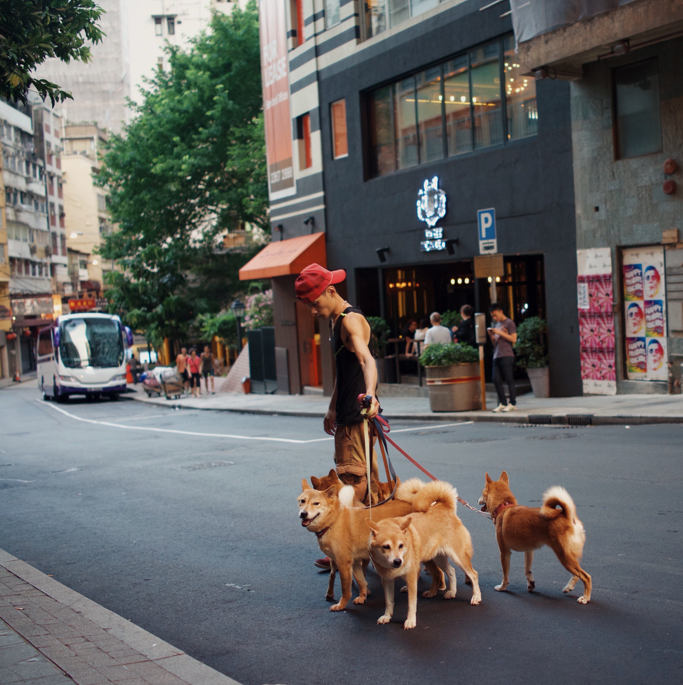
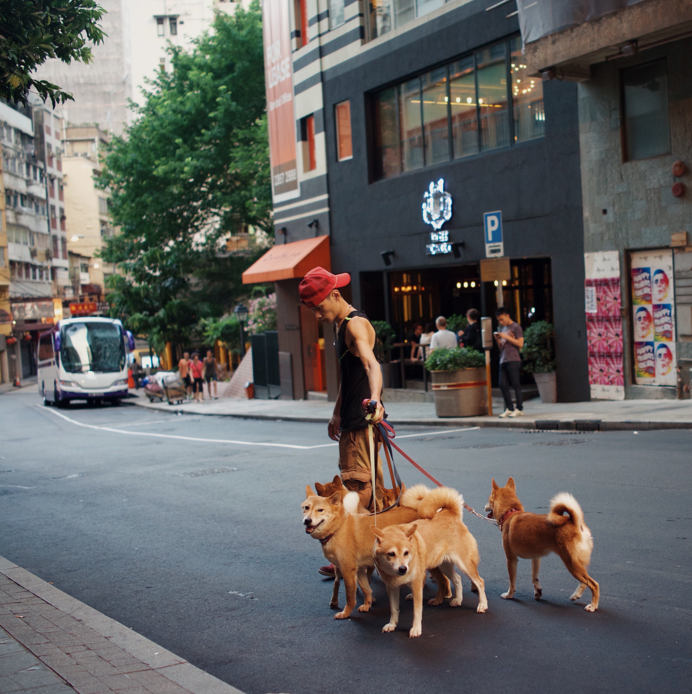
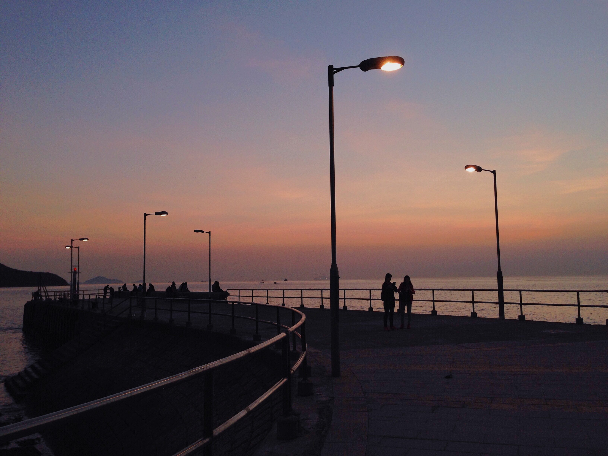

5 of my favorite places in Hong Kong
"
SHEUNG WAN

Explore More
SHEUNG WAN
 Explore MoreSheung Wan in the west side of the main business district, Central in Hong Kong. Since Hong Kong is known as an autonomous territory and a former British colony. The Edwardian-style building is one of the features of the district. Sheung Wan is also known for the lively area that it is down to earth vibe. The surrounding of the neighborhood has many creative hubs such as design studios, art gallery, murals or distinctive cafe and bar. As a whole, the place is like an art district of Hong Kong.
CAUSEWAY BAY
 Explore More
Explore More
Causeway Bay, a main busy district with energetic retail stores all around. The neighborhood is located in Hong Kong, an international city that is located in southeastern China. One of the reasons why I like Causeway Bay because is I grew up in this area surrounding numerous dining options, from upscale restaurants to street-food stalls.
TAI O
 Explore MoreTai O is a fishing town, located on the western side of Hong Kong. The village is nice to visit for a one day trip. It will be very chill walking around and explore. The views and the streets from Tai O are very different than the center of Hong Kong.
MONG KOK
 Explore More
Explore More
Mong Kok is a buzzing maze of narrow streets with tones of stores and street foods. Also, it is known as a place that can find any weird things that you can think of and any unlimited edition items.
 Explore More
Explore More
Sham Shui Po is one of the densest and most vibrant neighborhoods in Hong Kong. It has a diverse mix of migrants living in small living spaces. Sham Shui Po has many lively street markets, electronics outlets, fabric stores, restaurants, and food vendors which I could get inspirations or material for my art.